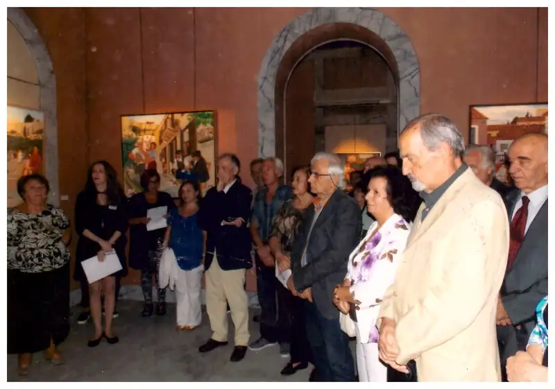
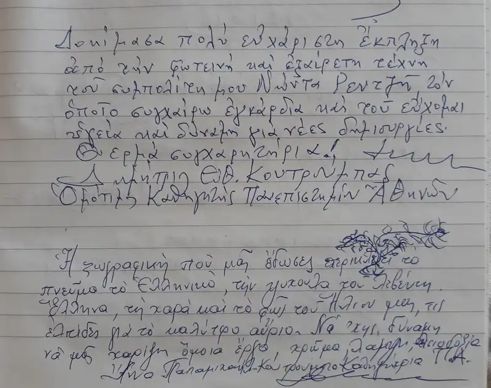

ΕΚΘΕΣΗ: ΜΟΥΣΕΙΟΝ ΤΗΣ ΠΟΛΕΩΣ ΤΩΝ ΑΘΗΝΩΝ (2016)
Οκτώβριος 2016
Μια νοσταλγική ματιά στην πρόσφατη ιστορία της Αθήνας
Στους νεώτερους μπορεί να μοιάζει με την εικονογράφηση ενός παραμυθιού...
Στους μεγαλύτερους μπορεί να μοιάζει με μια νοσταλγική, κλεφτή ματιά στις παιδικές μνήμες της πρόσφατης ιστορίας της Αθήνας...
Σε αυτήν την έκθεση του Νώντα Ρεντζή, στο "Μουσείον της Πόλης των Αθηνών", η σύγχρονη λαϊκή ζωγραφική του μας ξανασμίγει με την βραχνή φωνή του σαλεπιτζή, το κουρασμένο πρόσωπο του καστανά όλη μέρα στην γωνία Πατησίων με Στουρνάρα και πιο κάτω με τον γνώριμο λούστρο έξω από το φαρμακείο του Μαρινόπουλου...
Ίσως ακριβώς εκεί ή σε έναν μαχαλά παραδίπλα είναι ο πλανόδιος ψαράς, πιο πάνω ο αρκουδιάρης, τα σοκάκια της Πλάκας περιδιαβαίνουν ο λατερνατζής και ο τροχιστής, στην Αρεοπαγίτου έχει πόστο ο φωτογράφος, στο Μετς τριγυρίζει ο γαλατάς...
Όλοι οι "χαμένοι" πια επαγγελματίες εκείνης της εποχής, μαζί με τα παιδιά που έπαιζαν χαρούμενα στα σοκάκια της πόλης μας, όταν δεν τραβούσαν την φούστα της μάνας για να τους πάρει παγωτό ή κεράσια από τους πλανόδιους πωλητές, θα βρίσκονται στην έκθεση του Νώντα στο Μουσείο στην πλατεία Κλαυθμώνος, από την Τετάρτη 12 Οκτωβρίου και μέχρι το τέλος του μήνα.
Μικροί και μεγάλοι είμαστε όλοι καλεσμένοι τους... για να θαυμάσουμε πόσο μεγάλη απόσταση διανύθηκε από την πόλη μας στην πιο πρόσφατη σιωπηλή ιστορία της.


